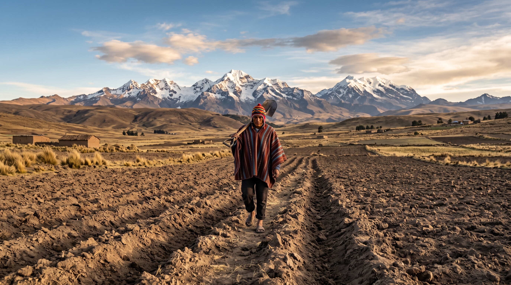
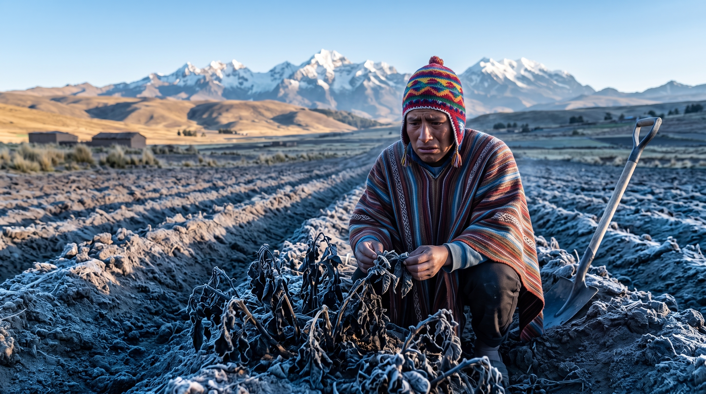
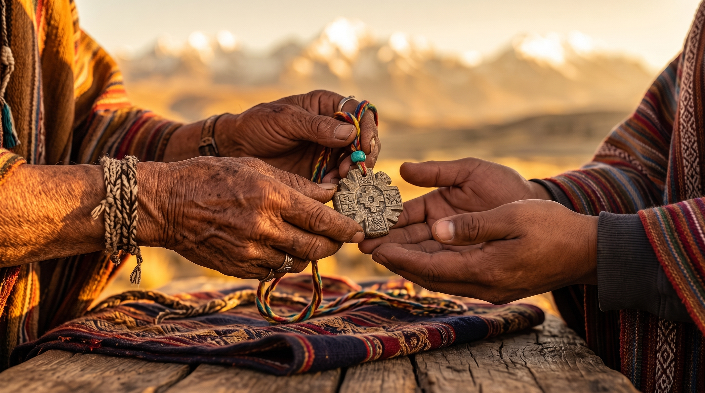
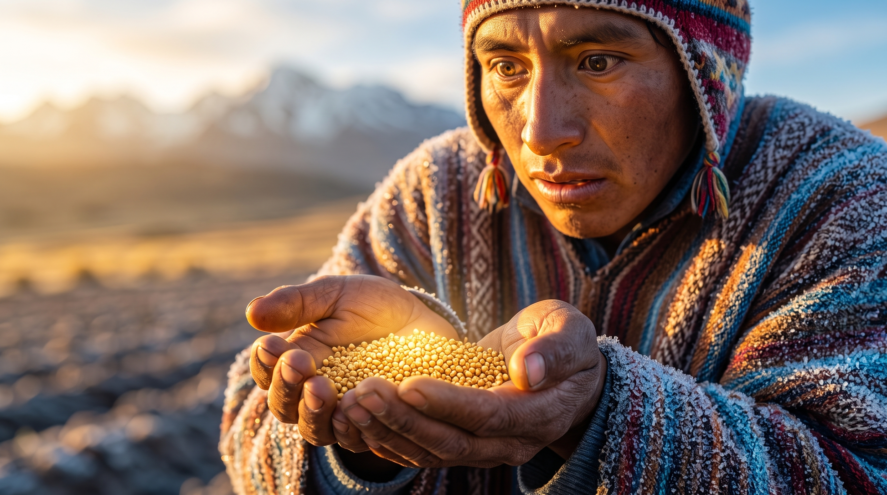
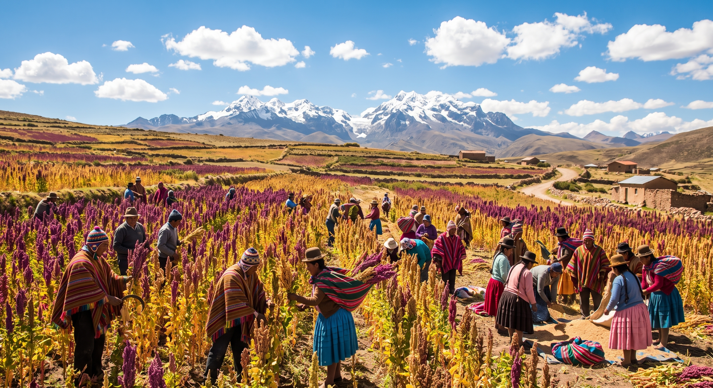

El Relato y su Adaptación
El Relato Elegido
Título: La Leyenda de la Quinua (Tradición oral andina boliviana)
Fuente: Recopilación de mitos del Altiplano boliviano[cite: 1].
Descripción: Kari, un joven agricultor aymara, enfrenta una época de severas sequías y heladas que amenazan la supervivencia de su ayllu[cite: 1]. Tras ser aconsejado por un anciano Yatiri, Kari vigila la cumbre nevada en la noche más fría, siendo recompensado con el descubrimiento de la quinua, un grano sagrado capaz de resistir climas extremos[cite: 1].
La Adaptación Contemporánea
Conexión: En el relato original, la helada representa la vulnerabilidad ante el clima[cite: 1]. Hoy en día, los agricultores enfrentan el mismo desafío de incertidumbre meteorológica[cite: 1]. La adaptación transforma la "búsqueda de respuestas en las estrellas" en el uso de una herramienta digital: un sistema de alertas tempranas que ayuda al productor actual a anticipar heladas basándose en datos y tecnología[cite: 1].
Experiencia Audiovisual
Video oficial en YouTube: Ver en YouTube (Duración: 2:00)
Estructura Narrativa
Camino del Héroe
| Etapa del Camino[cite: 1] | Aplicación en el Relato[cite: 1] |
|---|---|
| 1. Mundo ordinario | Kari vive en una comunidad altiplánica, cultivando la tierra como sus ancestros. |
| 2. Llamado | Heladas imprevistas amenazan con destruir las cosechas y provocar hambruna en el ayllu. |
| 3. Duda | Kari teme por el futuro de su pueblo y no sabe cómo anticipar el clima extremo. |
| 4. Mentor o ayuda | El sabio Yatiri le entrega un amuleto y le aconseja leer las señales del cielo nocturno. |
| 5. Cruce del umbral | Kari sube a la cima de la colina sagrada para vigilar durante la noche altiplánica. |
| 6. Pruebas | Enfrenta el frío gélido, el cansancio y el desaliento en medio de la oscuridad. |
| 7. Gran desafío | Descubre a la doncella celeste (Chaska) en la madrugada más helada de la vigilia. |
| 8. Recompensa | Recibe la semilla de la quinua (jiwura) y el conocimiento sobre cuándo sembrarla. |
| 9. Regreso | Desciende al amanecer hacia su pueblo llevando consigo el "grano de oro". |
| 10. Transformación | La comunidad siembra la quinua, vence la crisis y aprende a observar su entorno para prever el clima. |
Storyboard (6 Escenas)

Escena 1: Altiplano y Kari

Escena 2: Las heladas

Escena 3: El consejo del Yatiri
Escena 4: Vigilia nocturna

Escena 5: Hallazgo de la quinua

Escena 6: Cosecha próspera
Guion Breve
Parte A: Relato Original (0:00 - 1:15)[cite: 1]
[Voz en off - Escenas 1 a 3]: "En el corazón del altiplano boliviano, el joven Kari vivía en armonía con su tierra. Pero un año, heladas implacables amenazaron con arruinarlo todo. El sabio de la comunidad le aconsejó: 'La respuesta no está en lamentar el frío, sino en comprender las señales del cielo'."
[Voz en off - Escenas 4 a 6]: "Cruzando el umbral, subió a la cumbre sagrada. Soportó la noche más fría y, al alba, la sabiduría ancestral se reveló: descubrió el grano dorado de la quinua. Kari regresó a su pueblo con la semilla, venciendo el hambre y aprendiendo a interpretar el clima."
Parte B: Reinterpretación - Desarrollo de Software (1:15 - 1:45)[cite: 1]
[Voz en off - Escenas 7 y 8]: "Hoy, los agricultores enfrentan el mismo desafío. Desde el Desarrollo de Software, creamos KawsayAgro, una plataforma que digitaliza este saber. El sistema procesa datos meteorológicos y predictivos locales, entregando una alerta clara con recomendaciones para proteger la siembra."
[Voz en off - Escena 9]: "Transformamos la intuición en decisiones simples y oportunas, asegurando que la tecnología sea el nuevo mentor de nuestra soberanía alimentaria."
Parte C: Cierre (1:45 - 2:00)[cite: 1]
[Voz en off - Escena 10]: "El relato de ayer es la solución digital de hoy. Desarrollar software es crear herramientas que preserven la vida y el conocimiento."
Mención: Desarrollo de Software
Solución propuesta: KawsayAgro (Aplicación Web/Móvil)
Flujo Funcional del Sistema[cite: 1]
1. Usuario: Agricultor o productor rural del altiplano boliviano.
2. Entrada: Registro de ubicación de la parcela (GPS), tipo de cultivo (Quinua Real) y estado fenológico actual.
3. Proceso: El sistema procesa variables de APIs meteorológicas locales mediante un motor de reglas agronómicas predictivas.
4. Resultado: Generación de alertas tempranas de helada con tarjetas de acción preventiva e historial de decisiones[cite: 1].
Mockups de la Solución (2 a 3 pantallas)[cite: 1]

1. Dashboard: Monitoreo de parcela y clima.

2. Alertas: Semáforo predictivo de heladas.

3. Recomendación: Guía de medidas preventivas.
Uso Documentado de Inteligencia Artificial
Herramientas Utilizadas
ChatGPT (Guion y estructura), Midjourney / Stable Diffusion (Storyboard e imágenes), ElevenLabs (Voz en off)[cite: 1].
Ciclo de Iteración Documentado[cite: 1]
| Fase del Proceso[cite: 1] | Detalle de la Ejecución[cite: 1] |
|---|---|
| Prompt Inicial[cite: 1] | A bolivian man holding quinoa seeds in the cold night, high quality, realistic. |
| Resultado Inicial[cite: 1] | La IA generó un personaje con rasgos incorrectos (no aymara), con espigas de trigo y con iluminación genérica de estudio. |
| Error / Limitación[cite: 1] | Inconsistencia cultural, anacronismo botánico (trigo en vez de quinua) y falta de contexto geográfico del Altiplano boliviano. |
| Corrección Aplicada[cite: 1] | Close-up cinematic shot of a 25-year-old indigenous Bolivian Aymara farmer with authentic facial features, wearing a traditional alpaca wool chullo and poncho, cupping glowing raw golden quinoa grains. Setting: Bolivian Altiplano at dawn, frosted ground, Cordillera Real in background. Hyperrealistic, 8k. |
| Resultado Final[cite: 1] | Representación visual fiel, indumentaria contextualmente correcta y grano de quinua verídico bajo luz matutina andina. |
Presentación y Conclusiones
[Espacio para incrustar presentación de Canva o Google Slides][cite: 1]
Conclusiones[cite: 1]
La articulación entre la tradición oral de nuestro contexto y el desarrollo de software demuestra que la tecnología actual no debe imponerse artificialmente, sino servir como un puente lógico para potenciar los saberes ancestrales de nuestras comunidades. KawsayAgro resuelve un problema real transformando la intuición en datos accionables.